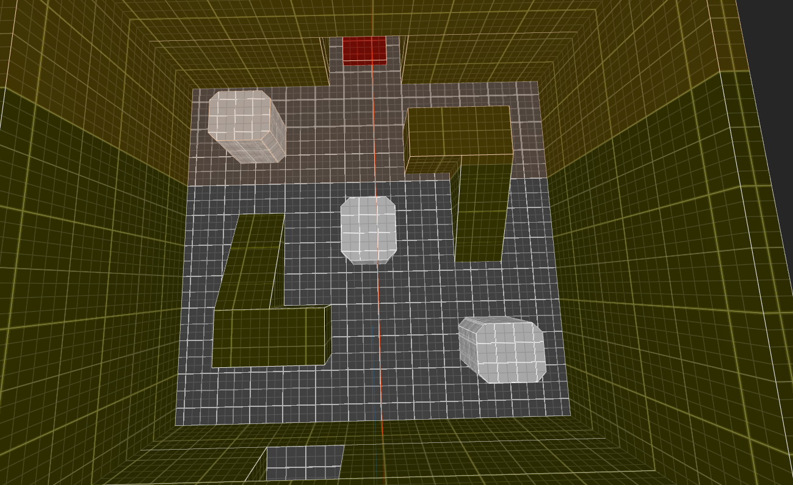

Quake Custom Single Player Map: RIP INC.
Rip Inc is a Single Player map for the original Quake game made within TrenchBroom. Venture through an abandoned research facility, infested with the mutated remains of those who worked here. As you explore more of the map, you may descover the darker secrets of this facility.
Level Theming
WHERE IS THIS PLACE: This level is themed around an office space and production center for an experimental chemical treatment company placed out in a rural area of the country. As the player progresses into the level, they will be moving from a modernist office space and lobby filled with architectural features and art pieces, to a laboratory and research facility, to a dingy factory producing large vats of mysterious chemical compounds.
WHAT HAPPENED: The main threat is the viral outbreak that has broken out from the research facility of the building and infected all the employees of the company to turn into zombie monstrosities. The players goal is to go through this ruined facility and clear out all the mutants that have broken free before they escape the building.
WHAT HERE IS NOT WHAT IT APPEARS TO BE: The level progression is based upon this idea. As the player progresses and unlocks more areas of the facility they will find that the areas divert more and more from the picturesque, clean and ornate environments of the main Lobby area. The final area in the production area is a very dingy and dark warehouse heavily contrasting the start of the level. This progression is supposed support the narrative in its themes of more secret and darker motives placed behind the clean and elegant front the company has put up for itself.
HOW DOES IT ALL CONNECT: When the player first enters the building, they will find themselves in a towering lobby room, with multiple floors with balconies looking over onto the bottom floor in which they entered. As the player progresses they will be revisiting this main room to access the other areas of the map. This is also how the employees of the facility would typically navigate the building, so creating an environment that naturally guides people around the different sectors of the building.
WHERE IS THE BATHROOM: It’s on the first balcony next to the Communications Office! That is to say this is an environment originally meant to be a company, with workers and a job hierarchy. Office spaces will have branching rooms for department heads, janitors closets will be littered around, lab spaces will have experiments being worked on, etc. Building out a map layout that feels like it could be a real office space will help use prior knowledge of how a space like this is typically organized.
WHAT HAPPENED: The main threat is the viral outbreak that has broken out from the research facility of the building and infected all the employees of the company to turn into zombie monstrosities. The players goal is to go through this ruined facility and clear out all the mutants that have broken free before they escape the building.
WHAT HERE IS NOT WHAT IT APPEARS TO BE: The level progression is based upon this idea. As the player progresses and unlocks more areas of the facility they will find that the areas divert more and more from the picturesque, clean and ornate environments of the main Lobby area. The final area in the production area is a very dingy and dark warehouse heavily contrasting the start of the level. This progression is supposed support the narrative in its themes of more secret and darker motives placed behind the clean and elegant front the company has put up for itself.
HOW DOES IT ALL CONNECT: When the player first enters the building, they will find themselves in a towering lobby room, with multiple floors with balconies looking over onto the bottom floor in which they entered. As the player progresses they will be revisiting this main room to access the other areas of the map. This is also how the employees of the facility would typically navigate the building, so creating an environment that naturally guides people around the different sectors of the building.
WHERE IS THE BATHROOM: It’s on the first balcony next to the Communications Office! That is to say this is an environment originally meant to be a company, with workers and a job hierarchy. Office spaces will have branching rooms for department heads, janitors closets will be littered around, lab spaces will have experiments being worked on, etc. Building out a map layout that feels like it could be a real office space will help use prior knowledge of how a space like this is typically organized.

Lobby Walkthrough
- The player begins at the far end of the hall leading to the Main Lobby. As the player approaches the light at the end of the hall, text will display on the screen telling them their mission here.
- Once they make it though the door at the end of the hall, the player is free to explore the lobby and first balcony.
- There are no enemies in the area as of yet, and the player only can only go into the Office space, which is where the key to progression is. There are some ammo pick ups scattered about and armor hidden in the lobby that are accessible to get if the player wants to scout ahead of time.
- Once the player makes it through the office and gets the Blue Key, the lobby is now infested with zombies and the first introduction to the Scrag. With the lobby having a lot of vertical space, the Scrag is able to freely move around the area. The player now has to make their way upstairs to the First Balc.
- Upstairs the player will see two zombies in the bath rooms, and two more leading to the Executive Office. With the new Blue Key the player can enter the office and find the Grenade Launcher, allowing the player to start killing off zombies for good.
- In the next room the player can use the Grenade Launcher to kill the zombified boss and get the Red Key. There are two windows that connect the private office to the rest of the office so the player can see it when they pick up the Grenade Launcher.
- With the Red Key now, the player has to go back out to the balcony and go to the other side. This is also a good opportunity for the player to start clearing out the zombies and loot the bathrooms if they haven’t had a chance. Once they get to the other side of the balcony and almost at the Lab door, three zombies appear in a group. This is to allow the player a chance to get a really satisfying group kill to end off clearing out this area.
- After the player traverses the Lab and Experimentation Facility, the player now finds themselves on the Second Balcony. Flying just beyond the ledge of the balcony are 3 Scrags and a few zombies lurking about. The ground here is also broken in areas and the furniture is tossed all around. The player at this point now has the Yellow Key and can access the Elevator.
- The player needs to use the elevator to go back down to the first floor, however around the corner on the other side of the balcony is the Rocket Launcher. The player needs to do some platforming to get over to it, and kill the Scrag guarding it.
- Once back on the ground floor, the player uses the Yellow Key to open the large freight doors right next to the elevator and get to the Production Facility. From this point forwards the player will make their way through the production plant and reach the end of the level.
Greybox Pictures


Textures and Lighting
Full documentation on the process of texturing each area of the map, as well as the lighting process in relation to the level goals. I also go into the process of creating a Custom Wad Texture for the Quake engine.
Read Here
Enemy Encounters
Detailed analysis process on each enemy featured in the level and testing out encounter ideas before incorporating into the final map.
Read Here
Playtesting Documents
This level was tested by a group of fellow Quake level designers through out different phases of development.
Read Here
Final Level Walkthrough
Walkthrough video of the final product of the level! To download the level yourself download the zip file Here!
For further documentation visit the GitHub Wiki for the project.